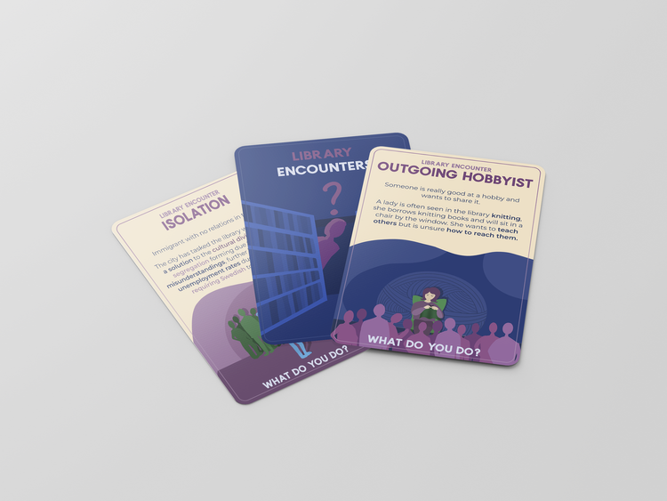
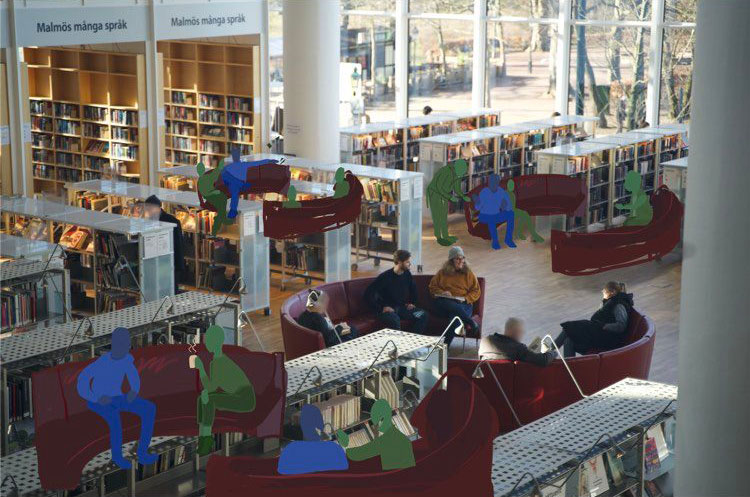
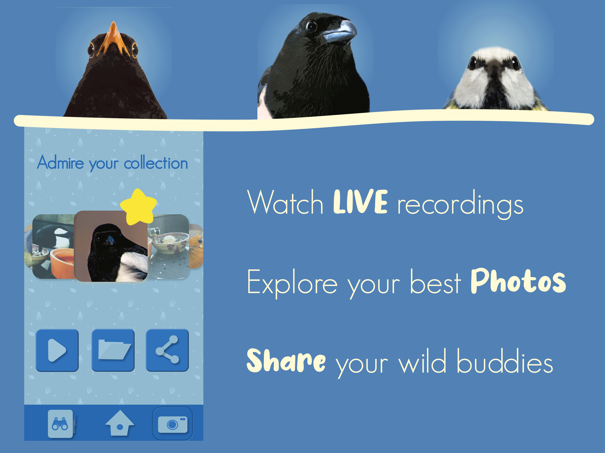
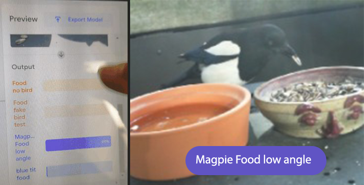
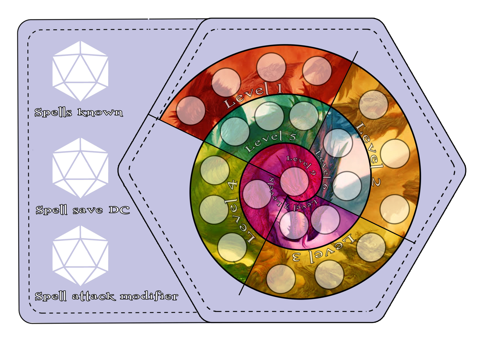
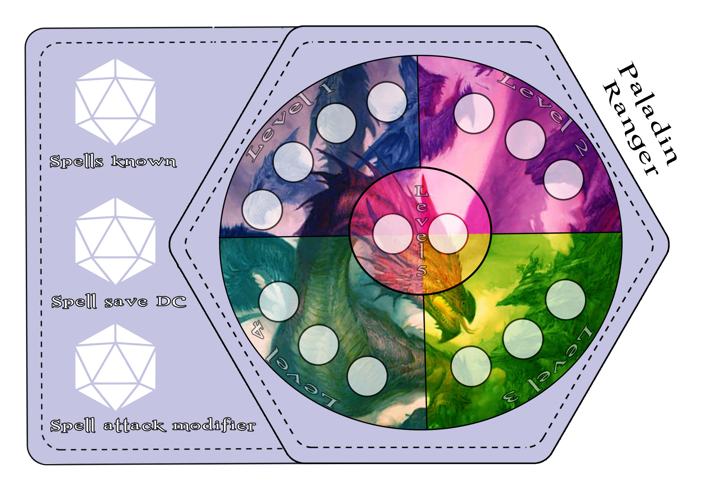
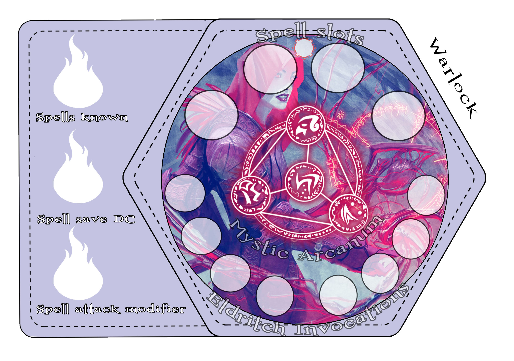
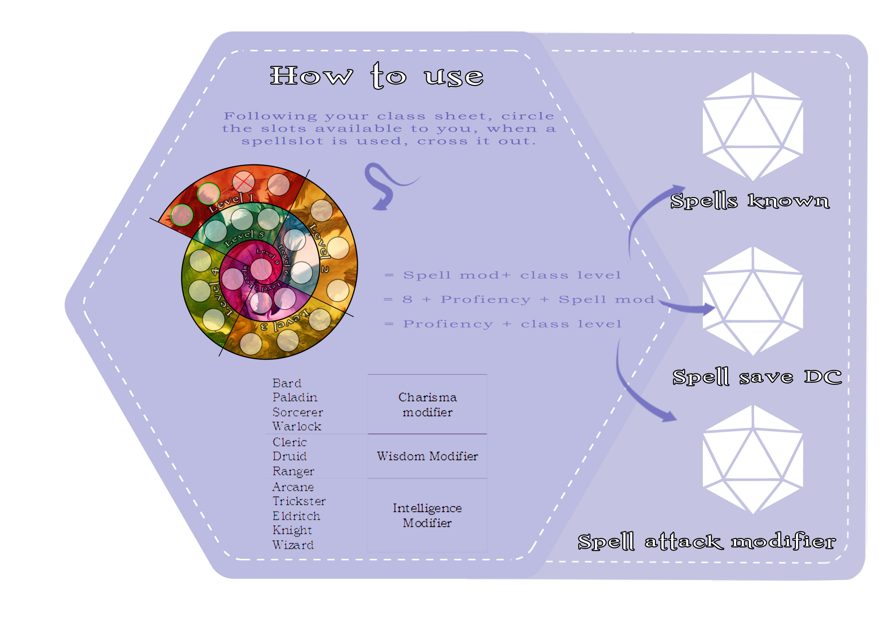
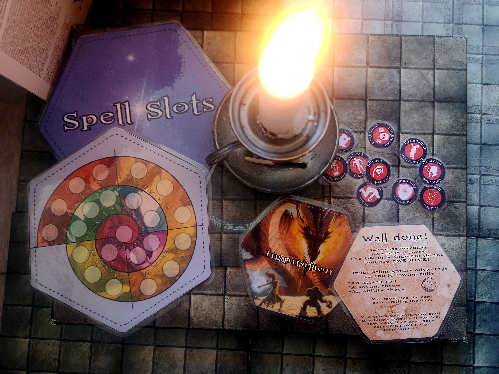

Working on getting into the professional sector! After completing my own degree and now finishing up my 2nd I feel ready to take on any challenge and work with a team of professionals.
Clarisse Duryee
Interaction Designer

I wear many hats, and I'm very passionate and dedicated to my work. With experience as a Designer, I have acquired the skills and knowledge necessary to make your projects successful. I enjoy every step of the design process, including prototyping, testing, conceptualizing and collaborating. I am also very creative and love to work on storytelling projects, games and more.


Video voiced by myself; explaining our research, our Co-design game and ideas that stemmed from a design game I created. Filmed, edited & illustrated by Alexa Raducanu.
Malmö Library opened to us with a problem in mind, how could they be more in service of the people, what did the people want and what were the current problems at the library that could be improved? Leading a team of five people, we interviewed library workers, library goers and those who didn’t use the library to highlight issues and try to get to the heart of the library’s problem.

The library is funded by the government to support language learning opportunities to teach Swedish to all immigrants willing to learn and we turned most of our focus towards Malmö being a melting pot of cultures. Thanks to our research, interviews, user tests with our card game, we concluded that to create lasting change we needed to promote lasting relationships between the Swedes and immigrants through usage of hobbies. With more hobby opportunities within the library immigrants could have more opportunities to practice their language café skills.

Co-Designed space that illustrates how language cafés could be more open to the public rather than secluded in a reserved space.
The Co-design game is part of democratic design, it allows for “non designers” to step in and through methods of a game or even props can express their ideas more efficiently allowing interaction designers can get to the heart of a problem and create more designs that people actually want. In short it is an easier and more personal method of conducting user research.


I created this project to explore the possible interactions between humans and wild animals, in this scenario; birds. Furthermore this project revealed the consequences of humans building for wildlife. Birdhouses were originally built to harvest and eat bird eggs, but later on birdhouses changed to become feeding points for our own viewing pleasure. As a consequence birds will change their feeding behaviors in the wild, change their territories based around feeders, and these feeders if not properly cleaned daily can harbor disease which can spread to all birds of different breeds who come to the birdhouse.

The goal of the project was to inspire users to get to know each individual bird that came to the feeder, and make a sort of collector game out of it to encourage clean feeders while rewarding the human users with photos and video footage of their feathery friends.
Using TeachableMachine an online machine learning tool powered by google to train a webcam to recognise certain bird species, was part of my project. Hours of filming my balcony and live streams gave me footage of 3 bird species but the most frequent visitors were Magpies. Magpies are extremely smart and understood that everyday there would be delicious food, to the point of building their nest in the tree in front of my balcony to feed themselves and their young. They learned to not be afraid of my tripod and would even tap the window in the mornings if there was no more food!
I created 3 different prototypes, UI’s for the “game” and much more, if you want more details of my work you can grab my Pictoral

Lab report An audiosit is very much like a Radio Drama, where through voice acting and sound design the listener is transported to another world through storytelling. What differentiates this project, is that the listener is blindfolded and bound to a table. The character they are listening to is blind and sick in a hospital, the listener like the character doesn’t know what is going on and discovers the truth as the story progresses. The listener gets poked, touched, wind blown on and more to immerse them.
Before entering the dark room, the listener is offered a consent form to give them more stress before entering the dark room and being bound to a table blindfolded. The consent form has no legal power, but it puts the listener in a more anxious state which helps immerse them more. The listener is wearing sound canceling headset playing the video while the 5 of us follow the video instructions in our assigned spots and perform movements and actions.
This project was the most fun I had with a team, every single person in that group was dedicated, put in late hours and passionate. Working with people like this was so motivating and inspiring that I still to this day think very fondly of them. The project was performed on renown sound designer Martin Hennel who enjoyed the sit and complemented it’s creativity.
Directed & Written by:
Clarisse Duryee
Performed by :
Clarisse Duryee
Ala Eldin Elkhafaji
Alexander Grövnes
Jesper Wistman
Marika Moreau
Sound Edited & Mixed by:
Clarisse Duryee
Alexander Grövnes
Video & Illustrations by:
Jesper Wistman

When 5th Edition Dungeons and Dragons was released in 2014 there were no player accessories like we see today in 2023. Accessories that make the game easier such as spellbooks, play cards etc. To help my players I designed spell cards that would help them keep track of how many spells they had left and included spell casting rules so they could play on the go, rather than interrupt the flow by checking their character sheets or rulebooks. As well as conditional status chips to keep track of character conditions such as being poisoned, fatigued, dazed etc. As well as homebrew inspiration cards that give advantages to players.
The interface of the spellslot cards had several designs and ultimately I came up with an aesthetic card that can be reused by simple dry-erase methods. The player circles how many spellslots they have, and cross out the slots as they use spells so they can easily keep track of how many spells they have left. The art on these cards comes from Wizards of the Coast & Bioware games.
Wizard & Sorcerer/general card
Ranger / Paladins
Warlock, custom warlock card for their special limited abilities.
Back of the card with explanation on how to use it
Based on 5th edition Dungeons and Dragons, this game was created to be a secret PVP RPG. Players would be unaware of each other making for a more interesting dynamic. One team would be the Vampires, and the others the Hunters, each at the end of their session were given 3 opportunities to impact the war map. I created a world, new rulesets and new classes.
I found that players tend to be more creative when fighting each other, and this was no exception. This experiment led to more interesting map dynamics as well as creative team decisions.

Flexibility is the only way forward, design is about a back and forth process. Nothing is precious and nothing is permanent.
This mentality was essential when working with other artists and writers, there is a balance to be had, diplomatic savy and of course the art of pinpointing the essence of the design to push forward to the final goal.
Given less than a month, my team of 5 led under my direction was able to successfully carry out this chose your own adventure tale which involved writing, illustrations and programming within Twine. I worked closely with the programers and even learned the basics myself to help, this was a learning experience for me and helped me understand the time contraints and what is and isn't possible under certain time frames. This made me a better leader for it.
If there is interest I can setup the game for you. I personally like to learn about every aspect of a project so I know what I can expect from my co-workers.


Working on getting into the professional sector! After completing my own degree and now finishing up my 2nd I feel ready to take on any challenge and work with a team of professionals.